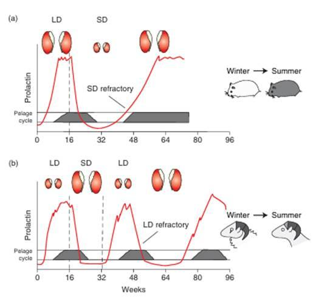
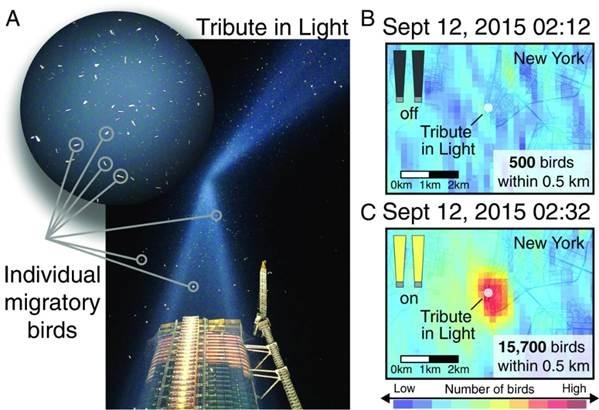
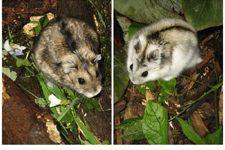

CONTRIBUTORS
- Sam Ding
- Subject Matter Expert – 'Breeding and Migration’
- All the Sections
- Figures
- Subject Matter Expert – 'Breeding and Migration’
LEARNING OBJECTIVES After reading this chapter, students should be able to …
- Understand how animals use internal circannual clocks and environmental factors to keep track of time
- Recognize and demonstrate the association between breeding and circannual rhythm
- Understand the hourglass model that decides breeding schedule
- Analyze the sensory mechanisms and behavioral stages of animal migration
- Evaluate how human activities disrupt breeding and migration
- Assess solutions like lighting reduction or bird safe architecture
CHAPTER OUTLINE
- How Annual Biological Clocks Work
- Circannual Rhythms and Proof
- Measuring Daylength and Synchronization
- Breeding Timeline Across Species
- Interval Timer vs Circannual Clocks
- Melatonin Duration Determines Breeding Time
- Animal Migration and Navigation
- Physiological Preparation for Migration
- Navigational Strategies
- The Three Phases of a Navigational Task
- Modern Environmental Threats
- Climate Change and Phenological Shift
- Artificial Light at Night (ALAN) Alters Nocturnal Migration
- Bird Safe Architecture
CHAPTER WRITTEN CONTENT
Unit: Infradian Rhythms Chapter: Breeding and Migration
Circannual Rhythms and Synchronization
In the natural world, many animals face challenges that require tracking time throughout the year. From reproducing in warm seasons to migrating across continents, organisms rely on circannual rhythms, internal biological clocks that repeat roughly once a year. Scientists have wondered whether these annual or seasonal behaviors are just passive adaptations to the weather, or whether animals actually possess an internal biological clock that can track time without environmental factors.
A classic study conducted by Dittami and Gwinner (1985) validated the existence of circannual rhythms. Gwinner kept African stonechats, small insect-eating birds found in East Africa, in constant conditions, maintaining a steady room temperature and an unchanging cycle of 12 hours of light and 12 hours of dark. Even though the seasonal cues were completely removed, the birds still underwent feather molting and testicular growth on schedule to prepare for reproduction. Because the cycles measured in the lab lasted roughly 10-11 months rather than exactly 365 days, their timing would gradually drift away from the natural seasons. Therefore, these cycles are not simply determined by external seasonal changes, but generated endogenously even in constant conditions (Dittami & Gwinner, 1985).
Often, biological clocks require synchronization. Because internal clocks are not exactly one year long, animals rely on environmental cues called zeitgebers to synchronize time. The most reliable way for animals to track time is photoperiodism, which is the difference in daylength during different seasons (Gwinner, 2003). Animals use a hormone called melatonin that is only synthesized during the night to measure daytime (Paul et al., 2008). In the summer, the longer daytime results in a shorter duration of melatonin secretion, while the shorter daytime in winter will result in longer duration of melatonin secretion. A classic experiment in Siberian hamsters reveals that the daily duration of melatonin secretion, rather than total melatonin amount, is the key signal that identifies the day length (Carter & Goldman, 1983). When nights become shorter in spring, the duration of melatonin secretion drops below a certain threshold. After this critical point, the animal’s brain will realize the arrival of spring, and reset the circannual clock to ensure it stays synchronized across seasons. Moreover, the accuracy of the circannual clock helps establish the breeding timeline (Paul et al., 2008).
Internal Timing of Seasonal Breeding
In order to provide a good living condition for the offspring to survive, animals need to time their breeding so that their children are born during the warm months of spring. However, they do not keep track of time in the same way. We previously discussed circannual clocks that cycle roughly once a year, even without noticeable seasonal changes. Some animals also utilize seasonal interval timing, which functions similarly to an hourglass (Paul et al., 2008; Wood & Loudon, 2014). One cycle of an interval timer lasts several months rather than a whole year, and each cycle is activated by a seasonal cue. Unlike a circannual clock, an interval timer cannot repeat the cycle on its own. The start timing is triggered by environmental cues, mainly seasonal changes (Paul et al., 2008; Wood & Loudon, 2014).
The Siberian hamster is an example of an animal that utilizes an interval timer. Under short photoperiods (i.e. short daytime) during winter, the size of gonads (reproductive organs) of male Siberian hamsters will shrink, decreasing the tendency of reproductive activity. After several months, their gonads will start to grow again, even if the daylight time is unchanged in a lab condition. This phenomenon indicates that the hamsters are not simply relying on external conditions, but are “governed by a process with hourglass properties designated an interval timer” (Paul et al., 2008, p. 342). This shift between short and long days is like turning over an hourglass. When the hamster’s gonad responds to the arrival of winter, it’s like flipping the hourglass and the “sand” starts to run. After the “sand” has run out several months later, the growth of gonads will be triggered automatically. Just like we need to flip the hourglass to start another cycle, the interval timer won’t reset itself without exposure to long days (Paul et al., 2008).
By contrast, the golden-mantled ground squirrel illustrates how a circannual clock differs from an interval timer. The squirrels utilize an internal circannual clock, and their reproductive cycle continues without exposure to change in daylength. This is because these squirrels hibernate in dark underground conditions for months, and don’t have access to daylight cues (Paul et al., 2008). In an experiment by Pengelley and Fisher (1957), the squirrels were kept in constant laboratory conditions for years. They still hibernated in autumn and winter, and remained active in spring and summer without experiencing changes in daylength. Both systems can help animals measure reproductive time, but only the circannual clock can repeat its annual cycle indefinitely under constant conditions.
Melatonin Secretion and Breeding Time
Melatonin can help synchronize the internal clock of animals, whether it’s a circannual clock or an interval timer. Moreover, it will further affect the release of a hormone called gonadotrophin-releasing hormone (GNRH). GNRH then influences hormones from the pituitary gland that activate the gonads. Then, the reproductive activity of animals increases (Wood & Loudon, 2014).
To ensure their offspring are born during warm seasons, animals with different pregnancy lengths need to adjust their reproductive time to different seasons. For example, small mammals like the Siberian hamster with a short pregnancy period can begin breeding in spring. Larger mammals like sheep and deer have to begin mating in autumn to give birth in the warm spring, because their pregnancy time is longer. As Figure 1 (see chapter add in) suggests, long days (LD) activate reproduction in Siberian hamsters, while short days (SD) activate reproduction in Sheep (Wood & Loudon, 2014). Together, these examples explain that breeding timeline is determined by both the duration of melatonin secretion affected by daylength and the time needed for pregnancy.
Migration Timing and Navigation
In addition to breeding, migration behavior also requires animals to determine the right time of year. Without the correct timing, animals can face countless consequences, such as failing to escape harsh winter, arriving late at breeding sites, or missing the abundant food sources that are only available in certain months. Gwinner’s experiment on songbirds highlights the timing mechanisms that help migratory birds know when to leave. Songbirds are normally only active during the day, but migrate at night to avoid predators. During migration periods, the researchers kept these birds with constant daylength and temperature, but they still became unusually active at night, fluttering their wings in the cage. This phenomenon is called migratory restlessness, and it indicates migratory readiness and validates the existence of an internal circannual clock. Seasonal changes in daylength can help synchronize the circannual clock to ensure the accuracy of migration timing (Gwinner, 2003).
Once birds determine when to migrate, the birds need to determine the correct direction to their destination. One way of navigating is using the relative position of the Sun. However, the Sun is always moving across the sky, so the birds need to change their angle between their path and the Sun to keep flying in the same direction. Luckily, the birds can estimate the time of day using their circadian clocks, and use this time information to adjust the angle as the Sun moves (Mouritsen, 2018). For example, a bird in the Northern Hemisphere flying south would see the Sun on its left side in the morning, ahead at noon, and on its right side in the afternoon. In an experiment conducted by Guilford and Taylor (2014), the circadian clocks of pigeons were shifted, and the birds’ choice of direction was affected under sunny conditions. Thus, the circadian clock can help migratory birds maintain a correct direction within a day.
Besides using the Sun as a navigational cue, birds might also use stars or the Earth’s magnetic field. The navigation process can be divided into three stages (Mouritsen, 2018). First, broad cues like celestial cues or magnetic cues help animals travel to the correct region. Then, landmarks and olfactory differences help them narrow down the home area. Finally, specific sights or smells help them locate a specific site.
Overall, the internal biological clocks help birds know when to migrate and how to migrate. However, since their internal clocks are synchronized with seasonal cues, a shocking change in seasonal conditions may cause them to migrate at the wrong time.
Modern Environmental Threats
Although internal biological clocks can help animals track seasons, their timing may not match a changing environment. Animals follow the similar seasonal schedule every year. When climate change shifts the timing of seasonal events, such as breeding or plant growth, this change is called a phenological shift. However, different species may adjust at different rates, creating a mismatch between food supply and the time animals arrive.
A study by Both et al. (2006) uses pied flycatchers, migratory birds that feed on caterpillars, to examine this problem. In the Netherlands, climate change caused the springs to be warmer. As a result, caterpillars reproduce a lot earlier than before, making the food peak for the birds shift earlier. Because the flycatchers were not in the Netherlands before migrating, they didn’t notice the warm spring or advance their arrival. By the time the birds arrived, there was not enough food source for the flycatchers and their nestlings. Populations in areas with the earliest food peaks declined by about 90%, while those in areas with the latest food peaks only declined by about 10%. This example shows that climate change can harm animals not only through rising temperatures, but also by disrupting the seasonal timing (Both et al., 2006).
Another example of human disruption is artificial light at night (ALAN). As we discussed earlier, songbirds that migrate at night rely on celestial and magnetic cues to migrate. However, strong artificial light can distract the birds’ use of celestial cues to navigate. The illuminated building structures in cities will disorient migratory birds, resulting in circling around the skyscrapers or even fatal collision with the buildings. Hundreds of millions of birds die annually from collisions with buildings (Van Doren et al., 2017).
Van Doren et al. (2017) studied this problem using the light beams of the “Tribute in Light” 911 memorial in New York City. They employed radar to observe and compare bird behavior when the light beams were on and off. Across the seven nights over seven years, the birds gathered around the light beams and exhibited intense vocal activity when the lights were on. Under illumination, peak bird density near the light installation exceeded 20 times the baseline of the surrounding area every year. However, when the lights were switched off, the birds dispersed and moved away from the site within minutes. This finding suggests that light pollution can disrupt migrating birds, but reducing nighttime lighting during migratory periods can help protect them from collision effectively (Van Doren et al., 2017).
CHAPTER ADD-INS Explanatory Figures Siberian hamsters and (b) SD (short day) breeding sheep. From Wood & Loudon (2014).


Bird density within 0.5 km when lights were off (B) and on (C). From Van Doren et al. (2017).
Exercise 1
Siberian Hamsters use duration of melatonin secretion at night to determine when to reproduce. In an experiment by Carter and Goldman (1983), the pineal glands of juvenile male hamsters were removed to control their melatonin exposure. The researchers gave them the same light and dark schedule and the same amount of melatonin (10 nanograms) each day. However, the infusion duration of melatonin was different. (Female hamsters have a short gestation of less than a month) (2017).

| Group | Melatonin amount | duration |
|---|---|---|
| A | 10 ng | 4 hours |
| B | 10 ng | 12 hours |
- Which treatment resembles the melatonin signal in summer, and which resembles the signal in winter? Explain the association between duration of melatonin secretion and day length changes.
- Which group is expected to show testicular development? Explain the logic using the chapter’s discussion in seasonal breeding schedules.
- Why did researchers give both groups the same amount of melatonin every day?
Explanation
- Group A resembles summer and Group B resembles winter. Melatonin is synthesized in dark. Summer nights are shorter than winter nights, resulting in a shorter duration of melatonin secretion.
- Group A will show testicular development. Because the gestation period is short, the hamsters will reproduce in spring to make sure their offspring can have good living condition. Therefore, they will increase reproductive activity in spring and summer that have a shorter night length.
- Keeping the amount equal isolates duration of melatonin secretion’s effect from melatonin amount. If Group B receives both longer duration and more amount, we won’t know which difference contributes to the change in reproductive activity.
Exercise 2
To protect migratory birds from urban bird collision, two main solutions are employed:
- “Lights Out” programs that turn off unnecessary building lights during peak migration period. (2) Bird safe architecture using patterned glass curtain on skyscrapers. (Van Doren et al., 2017) How will both solutions work together to protect migrating birds? Without light prevention, why is glass patterns alone not effective enough to protect birds?
Explanation: Migratory birds rely on star and magnetic cues to navigate. While bird safe patterned glass will prevent direct collision to the building, the birds will still be confused and trapped by urban light pollution (Van Doren et al., 2017). “Lights Out” programs can prevent the birds from being attracted by lights and waste their critical energy to migrate.
GLOSSARY
Term
Definition
| Circannual rhythm | An internal biological clock that repeats roughly once a year. Can be kept constantly without outside factors. |
|---|---|
| Photoperiodism | The ability of animals to measure season changes with daylength. |
| Melatonin | A hormone produced during darkness by the pineal gland. Animals use the duration of it to track daylength and sense the time of year. |
| Migration restlessness | Hyperactive behavior shown during animals’ normal migration period. |
| Phenology | The timing of seasonal life-cycle events in creatures in response to environmental conditions. |
| Zeitgeber | An external environmental cue that synchronizes an organism’s internal biological clock. |
| Diurnal | Active primarily during the daytime |
| Nocturnal | Active primarily during the nighttime |
REFERENCES
Both, C., Bouwhuis, S., Lessells, C. M., & Visser, M. E. (2006). Climate change and population declines in a long-distance migratory bird. Nature, 441(7089), 81–83.
https://doi.org/10.1038/nature04539 Dittami, J. P., & Gwinner, E. (1985). Annual cycles in the African stonechat Saxicola torquata axillaris and their relationship to environmental factors. Journal of Zoology, 207(3), 357–370. https://doi.org/10.1111/j.1469-7998.1985.tb04937.x Guilford, T., & Taylor, G. K. (2014). The sun compass revisited. Animal Behaviour, 97, 135–143. https://doi.org/10.1016/j.anbehav.2014.09.005 Gwinner, E. (2003). Circannual rhythms in birds. Current Opinion in Neurobiology, 13(6), 770–778. https://doi.org/10.1016/j.conb.2003.10.010 Mouritsen, H. (2018). Long-distance navigation and magnetoreception in migratory animals. Nature, 558(7708), 50–59. https://doi.org/10.1038/s41586-018-0176-1 Paul, M. J., Zucker, I., & Schwartz, W. J. (2008). Tracking the seasons: The internal calendars of vertebrates. Philosophical Transactions of the Royal Society B: Biological Sciences, 363(1490), 341–361. https://doi.org/10.1098/rstb.2007.2143 Van Doren, B. M., Horton, K. G., Dokter, A. M., Klinck, H., Elbin, S. B., & Farnsworth, A. (2017). High-intensity urban light installation dramatically alters nocturnal bird migration. Proceedings of the National Academy of Sciences, 114(42), 11175–11180.
https://doi.org/10.1073/pnas.1708574114 Wood, S., & Loudon, A. (2014). Clocks for all seasons: Unwinding the roles and mechanisms of circadian and interval timers in the hypothalamus and pituitary. Journal of Endocrinology, 222(2), R39–R59. https://doi.org/10.1530/JOE-14-0141 Carter, D. S., & Goldman, B. D. (1983). Antigonadal effects of timed melatonin infusion in pinealectomized male Djungarian hamsters (Phodopus sungorus sungorus): Duration is the critical parameter. Endocrinology, 113(4), 1261–1267. https://doi.org/10.1210/endo-113-4-1261 Pengelley, E. T., & Fisher, K. C. (1957). Onset and cessation of hibernation under constant temperature and light in the golden-mantled ground squirrel (Citellus lateralis). Nature, 180(4598), 1371–1372. https://doi.org/10.1038/1801371b0 Rendon, N. M., Amez, A. C., Proffitt, M. R., Bauserman, E. R., & Demas, G. E. (2017). Aggressive behaviours track transitions in seasonal phenotypes of female Siberian hamsters. Functional Ecology, 31(5), 1071–1081. https://doi.org/10.1111/1365-2435.12816 UNIT AND CHAPTER Unit: Infradian Rhythms